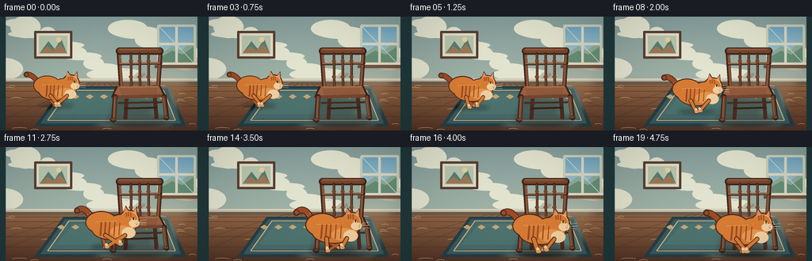
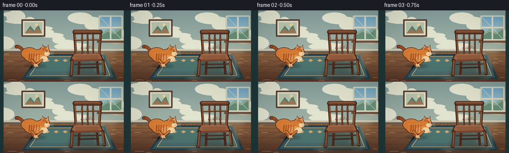

CODING AGENTS AS PIXEL WORLD MODELS
traex/DeepSeek-V4.1-Flash · dynamic_spatial_relationship_0006
点击播放 · 原生 RGB 像素
此结果可播放，但该运行尚未通过最终提交审核。页面展示不代表评测通过。
逐轮保存的候选
回放视频、检查图与代码变化。
每份候选均可单独播放。实际图片检查记录在下方工具轨迹中。
候选 01播放与检查图
点击播放 · 原生 RGB 像素


展开代码变化
--- 上一保存版本
+++ 本次保存版本
@@ -0,0 +1,573 @@
+from __future__ import annotations
+
+import math
+from pathlib import Path
+
+import numpy as np
+from PIL import Image, ImageDraw, ImageFilter
+
+import artifact_io
+
+
+WIDTH = 256
+HEIGHT = 144
+FRAMES = 20
+FPS = 4.0
+SS = 4
+W = WIDTH * SS
+H = HEIGHT * SS
+ROOT = Path(__file__).resolve().parent
+
+
+def sc(value: float) -> int:
+ return int(round(value * SS))
+
+
+def pt(x: float, y: float) -> tuple[int, int]:
+ return sc(x), sc(y)
+
+
+def box(x0: float, y0: float, x1: float, y1: float) -> tuple[int, int, int, int]:
+ return sc(x0), sc(y0), sc(x1), sc(y1)
+
+
+def rgba(hex_color: str, alpha: int = 255) -> tuple[int, int, int, int]:
+ value = hex_color.lstrip("#")
+ return tuple(int(value[i : i + 2], 16) for i in (0, 2, 4)) + (alpha,)
+
+
+def lerp(a: float, b: float, t: float) -> float:
+ return a + (b - a) * t
+
+
+def smoothstep(t: float) -> float:
+ t = max(0.0, min(1.0, t))
+ return t * t * (3.0 - 2.0 * t)
+
+
+def rounded_line(
+ draw: ImageDraw.ImageDraw,
+ points: list[tuple[float, float]],
+ fill: tuple[int, int, int, int],
+ width: float,
+) -> None:
+ p = [pt(x, y) for x, y in points]
+ w = max(1, sc(width))
+ draw.line(p, fill=fill, width=w, joint="curve")
+ radius = w / 2
+ for x, y in p:
+ draw.ellipse((x - radius, y - radius, x + radius, y + radius), fill=fill)
+
+
+def capsule(
+ draw: ImageDraw.ImageDraw,
+ x0: float,
+ y0: float,
+ x1: float,
+ y1: float,
+ width: float,
+ fill: tuple[int, int, int, int],
+) -> None:
+ rounded_line(draw, [(x0, y0), (x1, y1)], fill, width)
+
+
+def ellipse(
+ draw: ImageDraw.ImageDraw,
+ x: float,
+ y: float,
+ rx: float,
+ ry: float,
+ fill: tuple[int, int, int, int],
+) -> None:
+ draw.ellipse(box(x - rx, y - ry, x + rx, y + ry), fill=fill)
+
+
+def polygon(
+ draw: ImageDraw.ImageDraw,
+ points: list[tuple[float, float]],
+ fill: tuple[int, int, int, int],
+) -> None:
+ draw.polygon([pt(x, y) for x, y in points], fill=fill)
+
+
+def blurred_shadow(
+ base: Image.Image,
+ shapes: list[tuple[str, tuple[float, ...]]],
+ color: tuple[int, int, int, int],
+ blur: float,
+) -> None:
+ layer = Image.new("RGBA", (W, H), (0, 0, 0, 0))
+ d = ImageDraw.Draw(layer, "RGBA")
+ for kind, values in shapes:
+ if kind == "ellipse":
+ d.ellipse(box(*values), fill=color)
+ elif kind == "polygon":
+ coords = [(values[i], values[i + 1]) for i in range(0, len(values), 2)]
+ polygon(d, coords, color)
+ layer = layer.filter(ImageFilter.GaussianBlur(sc(blur)))
+ base.alpha_composite(layer)
+
+
+def make_background() -> Image.Image:
+ y = np.linspace(0.0, 1.0, H, dtype=np.float32)[:, None]
+ wall_top = np.array([133, 158, 156], dtype=np.float32)
+ wall_bottom = np.array([184, 196, 176], dtype=np.float32)
+ wall = wall_top[None, None, :] * (1.0 - y[:, :, None]) + wall_bottom[None, None, :] * y[:, :, None]
+ wall = np.repeat(wall, W, axis=1)
+ floor_y = np.clip((np.arange(H, dtype=np.float32) - sc(79)) / (H - sc(79)), 0, 1)[:, None, None]
+ floor_near = np.array([82, 51, 37], dtype=np.float32)
+ floor_far = np.array([153, 108, 72], dtype=np.float32)
+ floor = floor_far[None, None, :] * (1.0 - floor_y) + floor_near[None, None, :] * floor_y
+ floor = np.repeat(floor, W, axis=1)
+ mask = np.arange(H)[:, None, None] >= sc(79)
+ arr = np.where(mask, floor, wall)
+
+ rng = np.random.default_rng(17)
+ texture = rng.normal(0.0, 1.65, (H, W, 1)).astype(np.float32)
+ arr = np.clip(arr + texture, 0, 255)
+ image = Image.fromarray(arr.astype(np.uint8), "RGB").convert("RGBA")
+ d = ImageDraw.Draw(image, "RGBA")
+
+ # Plaster mottling keeps the wall from reading as a flat graphic.
+ for i in range(18):
+ x = (i * 71 + 19) % WIDTH
+ yy = 8 + (i * 37) % 67
+ rx = 13 + (i % 5) * 6
+ ry = 5 + (i % 4) * 3
+ ellipse(d, x, yy, rx, ry, rgba("#e2e4cf", 5 + (i % 3) * 2))
+
+ # Right-hand window and its cool daylight.
+ d.rounded_rectangle(box(198, 10, 247, 61), radius=sc(2.2), fill=rgba("#c9cfba"))
+ d.rectangle(box(201, 13, 244, 58), fill=rgba("#79a6b3"))
+ sky = Image.new("RGBA", (sc(43), sc(45)), (0, 0, 0, 0))
+ sd = ImageDraw.Draw(sky, "RGBA")
+ for i in range(sc(45)):
+ t = i / max(1, sc(45) - 1)
+ color = (
+ round(lerp(112, 176, t)),
+ round(lerp(165, 207, t)),
+ round(lerp(193, 208, t)),
+ 255,
+ )
+ sd.line((0, i, sc(43), i), fill=color)
+ image.alpha_composite(sky, pt(201, 13))
+ d = ImageDraw.Draw(image, "RGBA")
+ polygon(d, [(201, 48), (217, 37), (228, 43), (244, 30), (244, 58), (201, 58)], rgba("#8eac9a"))
+ polygon(d, [(201, 52), (217, 43), (230, 48), (244, 38), (244, 58), (201, 58)], rgba("#678f78"))
+ d.rectangle(box(221, 13, 224, 58), fill=rgba("#d9d9c7"))
+ d.rectangle(box(201, 33, 244, 36), fill=rgba("#d9d9c7"))
+ d.line([pt(201, 13), pt(244, 58)], fill=rgba("#c7d9d2", 130), width=sc(0.7))
+ d.rounded_rectangle(box(196, 58, 249, 63), radius=sc(1.4), fill=rgba("#e6dfca"))
+ d.rectangle(box(195, 61, 250, 65), fill=rgba("#6d5140", 65))
+
+ # A small framed print balances the left wall without competing with the cat.
+ d.rounded_rectangle(box(43, 18, 91, 53), radius=sc(1.2), fill=rgba("#563f32"))
+ d.rectangle(box(46, 21, 88, 50), fill=rgba("#e4ddc6"))
+ d.rectangle(box(49, 24, 85, 47), fill=rgba("#b8c5ad"))
+ polygon(d, [(50, 46), (61, 31), (69, 41), (77, 28), (84, 46)], rgba("#587e72"))
+ polygon(d, [(50, 46), (60, 37), (67, 43), (76, 35), (84, 46)], rgba("#9e7856"))
+ ellipse(d, 74, 29, 3.2, 3.2, rgba("#e8cf9d"))
+
+ # Floor boards recede toward the room's center.
+ d.rectangle(box(0, 78, 256, 85), fill=rgba("#c1bda9"))
+ d.rectangle(box(0, 82, 256, 86), fill=rgba("#6e5d4b", 85))
+ d.line([pt(0, 79), pt(256, 79)], fill=rgba("#f0e5ce", 150), width=sc(0.8))
+ seams = [-95, -30, 35, 98, 159, 219, 282, 350]
+ for i, bottom_x in enumerate(seams):
+ top_x = 128 + (bottom_x - 128) * 0.09
+ d.line([pt(top_x, 84), pt(bottom_x, 144)], fill=rgba("#4e3025", 90), width=sc(0.55))
+ for row_y in (88, 94, 102, 113, 126, 141):
+ d.line([pt(0, row_y), pt(256, row_y)], fill=rgba("#4f3126", 68), width=sc(0.5))
+ rng2 = np.random.default_rng(5)
+ for i in range(34):
+ x = float(rng2.integers(0, 256))
+ yy = float(rng2.integers(87, 143))
+ length = float(rng2.integers(8, 28))
+ d.arc(box(x, yy, x + length, yy + 3.2), 195, 342, fill=rgba("#e0b17e", 42), width=sc(0.42))
+
+ # Woven rug, drawn in perspective beneath the chair.
+ polygon(d, [(80, 88), (213, 88), (235, 139), (43, 139)], rgba("#263f45", 45))
+ polygon(d, [(82, 91), (211, 91), (228, 135), (51, 135)], rgba("#395a60"))
+ polygon(d, [(88, 94), (205, 94), (219, 129), (61, 129)], rgba("#496b6b"))
+ polygon(d, [(92, 97), (201, 97), (211, 123), (70, 123)], rgba("#4e7470"))
+ d.line([pt(87, 93), pt(60, 131)], fill=rgba("#d2b47f"), width=sc(1.3))
+ d.line([pt(206, 93), pt(221, 131)], fill=rgba("#d2b47f"), width=sc(1.3))
+ d.line([pt(87, 93), pt(206, 93)], fill=rgba("#d2b47f"), width=sc(1.1))
+ d.line([pt(60, 131), pt(221, 131)], fill=rgba("#d2b47f"), width=sc(1.1))
+ for i in range(8):
+ x = 77 + i * 18
+ polygon(d, [(x, 98), (x + 5, 101), (x, 104), (x - 5, 101)], rgba("#c6a676", 110))
+
+ # Soft daylight and room shading.
+ light = Image.new("RGBA", (W, H), (0, 0, 0, 0))
+ ld = ImageDraw.Draw(light, "RGBA")
+ polygon(ld, [(201, 63), (250, 63), (214, 143), (110, 143)], rgba("#ffe9bd", 19))
+ light = light.filter(ImageFilter.GaussianBlur(sc(7)))
+ image.alpha_composite(light)
+ d = ImageDraw.Draw(image, "RGBA")
+ d.rectangle(box(0, 0, 7, 144), fill=rgba("#20383b", 18))
+ d.rectangle(box(249, 0, 256, 144), fill=rgba("#20383b", 15))
+ return image
+
+
+def draw_chair(image: Image.Image) -> None:
+ blurred_shadow(
+ image,
+ [
+ ("ellipse", (139, 124, 211, 138)),
+ ("polygon", (150, 102, 198, 105, 183, 137, 134, 132)),
+ ],
+ rgba("#241c18", 78),
+ 3.2,
+ )
+ d = ImageDraw.Draw(image, "RGBA")
+
+ wood_dark = rgba("#4d2b20")
+ wood_mid = rgba("#75462f")
+ wood_light = rgba("#9a6241")
+ wood_edge = rgba("#3b241b")
+
+ # Rear legs and lower cross braces are visible through the chair.
+ capsule(d, 160, 91, 158, 128, 5.0, wood_dark)
+ capsule(d, 194, 89, 197, 127, 5.0, wood_dark)
+ capsule(d, 158, 116, 197, 115, 2.7, wood_edge)
+ capsule(d, 150, 109, 203, 108, 2.6, wood_dark)
+
+ # Back posts.
+ capsule(d, 149.5, 43, 153, 95, 5.2, wood_edge)
+ capsule(d, 202.5, 42, 199, 95, 5.2, wood_edge)
+ capsule(d, 150.3, 43.3, 153.5, 94, 3.5, wood_mid)
+ capsule(d, 201.7, 42.3, 198.4, 94, 3.5, wood_mid)
+ rounded_line(d, [(150.5, 44), (153.2, 92)], wood_light, 1.0)
+ rounded_line(d, [(201.5, 43), (198.8, 92)], wood_light, 0.9)
+
+ # Curved top rail, middle rail, and three turned spindles.
+ d.rounded_rectangle(box(146, 39, 206, 48), radius=sc(4.5), fill=wood_edge)
+ d.rounded_rectangle(box(148, 40, 204, 46), radius=sc(3.2), fill=wood_mid)
+ rounded_line(d, [(151, 41.5), (199, 41.5)], wood_light, 1.2)
+ capsule(d, 150, 60, 203, 59, 3.2, wood_edge)
+ capsule(d, 151, 59.3, 201, 58.5, 1.9, wood_light)
+ for x in (165, 176, 187):
+ capsule(d, x, 47, x + 0.4, 92, 3.2, wood_edge)
+ capsule(d, x - 0.2, 48, x + 0.2, 91, 1.8, wood_mid)
+ ellipse(d, x, 56, 2.5, 2.2, wood_mid)
+ ellipse(d, x, 76, 2.4, 2.1, wood_mid)
+
+ # Seat: a warm top plane, dark front edge, and visible side thickness.
+ polygon(d, [(146, 88), (202, 87), (209, 100), (140, 102)], wood_edge)
+ polygon(d, [(149, 88), (200, 87.3), (205, 98), (143, 99.5)], wood_light)
+ polygon(d, [(143, 99.5), (205, 98), (208, 102.2), (140, 104)], wood_mid)
+ rounded_line(d, [(153, 89.2), (199, 88.5)], rgba("#c08b61", 180), 0.8)
+ for i in range(7):
+ y = 91.3 + i * 1.15
+ rounded_line(d, [(151 + i * 0.35, y), (198 - i * 0.2, y - 0.4)], rgba("#6c412d", 55), 0.32)
+
+ # Front legs and feet.
+ capsule(d, 145, 101, 143, 131, 6.0, wood_edge)
+ capsule(d, 207, 101, 210, 128, 6.0, wood_edge)
+ capsule(d, 145.3, 102, 143.6, 129, 3.8, wood_mid)
+ capsule(d, 206.5, 102, 209.2, 126, 3.8, wood_mid)
+ rounded_line(d, [(144.3, 104), (143.2, 128)], wood_light, 0.9)
+ rounded_line(d, [(206, 104), (208.3, 125)], wood_light, 0.9)
+ ellipse(d, 142.6, 130.5, 4.0, 2.4, wood_edge)
+ ellipse(d, 209.5, 127.4, 4.0, 2.4, wood_edge)
+ ellipse(d, 142.9, 130.1, 3.1, 1.5, wood_mid)
+ ellipse(d, 209.2, 127.0, 3.1, 1.5, wood_mid)
+
+ # Small highlights make the chair read as varnished wood.
+ for x, y in ((154, 53), (159, 69), (192, 54), (194, 84)):
+ d.arc(box(x - 3, y - 2, x + 3, y + 2), 198, 326, fill=rgba("#d4a174", 110), width=sc(0.45))
+
+
+def cat_pose(frame: int) -> dict[str, float]:
+ if frame <= 2:
+ t = 0.0
+ else:
+ t = smoothstep((frame - 2) / 14.0)
+ if frame <= 3:
+ t = 0.0
+ elif frame >= 17:
+ t = 1.0
+ running = 4 <= frame <= 16
+ cycle = frame * 1.12 if running else (0.35 if frame > 16 else 0.0)
+ gait = math.sin(cycle * math.tau)
+ body_bob = -1.2 * abs(math.sin(cycle * math.tau)) if running else 0.0
+ x = lerp(71.0, 170.0, t) + 1.8 * math.sin(math.pi * t) * (1.0 - t)
+ ground = lerp(112.5, 132.0, t)
+ scale = lerp(0.90, 1.12, t)
+ return {
+ "x": x,
+ "ground": ground,
+ "scale": scale,
+ "running": float(running),
+ "gait": gait,
+ "cycle": cycle,
+ "bob": body_bob,
+ "progress": t,
+ }
+
+
+def draw_cat(image: Image.Image, pose: dict[str, float], frame: int) -> None:
+ cx = pose["x"]
+ gy = pose["ground"]
+ s = pose["scale"]
+ gait = pose["gait"]
+ run = pose["running"]
+ bob = pose["bob"]
+ cy = gy - 20.5 * s + bob
+ hx = cx + 20.0 * s
+ hy = gy - 32.0 * s + bob * 0.7
+ tail_sway = 3.2 * math.sin(pose["cycle"] * math.tau * 0.55 + 0.7)
+
+ # Shadow stays on the floor while the body lifts and falls.
+ shadow_w = (24.0 + 2.0 * pose["progress"]) * s
+ blurred_shadow(
+ image,
+ [("ellipse", (cx - shadow_w, gy - 3.1 * s, cx + shadow_w, gy + 3.1 * s))],
+ rgba("#171716", 92),
+ 2.4,
+ )
+
+ d = ImageDraw.Draw(image, "RGBA")
+ outline = rgba("#4b2a20")
+ far = rgba("#ad5d2b")
+ fur = rgba("#d77c34")
+ fur_light = rgba("#e6974d")
+ cream = rgba("#efd0a2")
+ stripe = rgba("#9c4b25")
+ paw = rgba("#d7a36d")
+
+ # Tail behind the body.
+ tail_points = []
+ for i in range(15):
+ u = i / 14.0
+ tx = cx - (18.0 + 24.0 * u) * s
+ ty = gy - (22.0 + 17.0 * math.sin(u * 2.1) + 7.0 * u) * s
+ ty += tail_sway * math.sin(u * math.pi) * s
+ tail_points.append((tx, ty))
+ rounded_line(d, tail_points, rgba("#4b2a20", 255), 7.6 * s)
+ rounded_line(d, tail_points, fur, 5.3 * s)
+ for u in (0.30, 0.50, 0.70, 0.88):
+ i = min(13, int(u * 14))
+ x0, y0 = tail_points[i]
+ x1, y1 = tail_points[min(14, i + 1)]
+ rounded_line(d, [(x0, y0), (x1, y1)], stripe, 5.7 * s)
+ tip_x, tip_y = tail_points[-1]
+ ellipse(d, tip_x, tip_y, 3.2 * s, 3.2 * s, rgba("#4b2a20"))
+ ellipse(d, tip_x, tip_y, 2.2 * s, 2.2 * s, stripe)
+
+ # Far legs move opposite the near legs.
+ hip_y = gy - 13.0 * s
+ if run:
+ fh_dx = -8.0 * gait - 1.0
+ ff_dx = 8.0 * gait + 1.0
+ fh_lift = max(0.0, -gait) * 4.0
+ ff_lift = max(0.0, gait) * 4.0
+ else:
+ fh_dx, ff_dx, fh_lift, ff_lift = -2.0, 2.0, 0.0, 0.0
+ capsule(d, cx - 12 * s, hip_y, cx + fh_dx * s, gy - fh_lift * s, 4.9 * s, outline)
+ capsule(d, cx + 13 * s, hip_y, cx + ff_dx * s, gy - ff_lift * s, 4.6 * s, outline)
+ capsule(d, cx - 12 * s, hip_y, cx + fh_dx * s, gy - fh_lift * s, 3.2 * s, far)
+ capsule(d, cx + 13 * s, hip_y, cx + ff_dx * s, gy - ff_lift * s, 3.0 * s, far)
+ ellipse(d, cx + fh_dx * s, gy - fh_lift * s, 2.4 * s, 1.5 * s, paw)
+ ellipse(d, cx + ff_dx * s, gy - ff_lift * s, 2.3 * s, 1.5 * s, paw)
+
+ # Main silhouette underlay, then the ginger fill. The overlap leaves one clean edge.
+ dark_shapes = [
+ (cx - 13 * s, cy - 8 * s, 18 * s, 12.5 * s),
+ (cx + 11 * s, cy - 5 * s, 17 * s, 12 * s),
+ (cx, cy, 24 * s, 12.2 * s),
+ (hx, hy, 11.2 * s, 10.6 * s),
+ ]
+ for x, y, rx, ry in dark_shapes:
+ ellipse(d, x, y, rx + 1.2 * s, ry + 1.2 * s, outline)
+ polygon(
+ d,
+ [
+ (hx - 7.0 * s, hy - 8.0 * s),
+ (hx - 4.0 * s, hy - 17.0 * s),
+ (hx + 1.3 * s, hy - 9.1 * s),
+ ],
+ outline,
+ )
+ polygon(
+ d,
+ [
+ (hx + 4.4 * s, hy - 9.3 * s),
+ (hx + 9.2 * s, hy - 16.2 * s),
+ (hx + 10.0 * s, hy - 6.5 * s),
+ ],
+ outline,
+ )
+ for x, y, rx, ry in dark_shapes:
+ ellipse(d, x, y, rx, ry, fur)
+ polygon(
+ d,
+ [
+ (hx - 6.6 * s, hy - 7.5 * s),
+ (hx - 4.2 * s, hy - 15.4 * s),
+ (hx + 0.7 * s, hy - 8.8 * s),
+ ],
+ fur,
+ )
+ polygon(
+ d,
+ [
+ (hx + 4.8 * s, hy - 8.9 * s),
+ (hx + 8.7 * s, hy - 14.6 * s),
+ (hx + 9.1 * s, hy - 6.5 * s),
+ ],
+ fur,
+ )
+ polygon(
+ d,
+ [
+ (hx - 4.5 * s, hy - 8.7 * s),
+ (hx - 3.3 * s, hy - 12.9 * s),
+ (hx - 1.0 * s, hy - 8.8 * s),
+ ],
+ rgba("#d99380"),
+ )
+ polygon(
+ d,
+ [
+ (hx + 5.8 * s, hy - 8.5 * s),
+ (hx + 8.1 * s, hy - 12.3 * s),
+ (hx + 8.7 * s, hy - 7.2 * s),
+ ],
+ rgba("#d99380"),
+ )
+
+ # Neck bridge and shoulder shading.
+ polygon(
+ d,
+ [
+ (cx + 12 * s, cy - 10 * s),
+ (cx + 20 * s, cy - 13 * s),
+ (hx - 2 * s, hy + 5 * s),
+ (hx - 6 * s, hy + 9 * s),
+ ],
+ fur,
+ )
+ ellipse(d, cx + 12 * s, cy + 3.0 * s, 14.5 * s, 7.2 * s, fur_light)
+ ellipse(d, cx + 19.5 * s, cy + 4.4 * s, 8.2 * s, 6.5 * s, cream)
+ ellipse(d, hx + 6.0 * s, hy + 4.4 * s, 6.1 * s, 4.6 * s, cream)
+ polygon(
+ d,
+ [
+ (hx + 4.0 * s, hy + 2.5 * s),
+ (hx + 12.3 * s, hy + 2.0 * s),
+ (hx + 10.8 * s, hy + 7.8 * s),
+ (hx + 5.5 * s, hy + 7.6 * s),
+ ],
+ cream,
+ )
+
+ # Body and tail stripes follow the form.
+ for i, (sx, width) in enumerate(((-13, 2.1), (-8, 1.8), (-3, 1.6), (3, 1.4), (9, 1.1))):
+ x = cx + sx * s
+ y0 = cy - 8.8 * s + abs(sx) * 0.06 * s
+ y1 = cy + 7.0 * s
+ rounded_line(d, [(x, y0), (x - 1.2 * s, y1)], stripe, width * s)
+ for x, y in ((hx - 3.3 * s, hy - 8.0 * s), (hx - 0.8 * s, hy - 8.4 * s), (hx + 2.0 * s, hy - 8.1 * s)):
+ rounded_line(d, [(x, y), (x + 0.2 * s, y + 4.0 * s)], stripe, 1.25 * s)
+ rounded_line(d, [(hx + 3.5 * s, hy - 2.0 * s), (hx + 5.0 * s, hy + 0.3 * s)], stripe, 0.8 * s)
+ rounded_line(d, [(hx + 6.2 * s, hy - 2.3 * s), (hx + 7.5 * s, hy + 0.2 * s)], stripe, 0.8 * s)
+
+ # Near legs, deliberately in front of the body.
+ if run:
+ nh_dx = 9.0 * gait + 1.0
+ nf_dx = -9.0 * gait - 1.0
+ nh_lift = max(0.0, gait) * 4.0
+ nf_lift = max(0.0, -gait) * 4.0
+ else:
+ nh_dx, nf_dx, nh_lift, nf_lift = 3.0, -3.0, 0.0, 0.0
+ capsule(d, cx - 8 * s, hip_y - 1.0 * s, cx + nh_dx * s, gy - nh_lift * s, 5.5 * s, outline)
+ capsule(d, cx + 15 * s, hip_y - 1.0 * s, cx + nf_dx * s + 2 * s, gy - nf_lift * s, 5.2 * s, outline)
+ capsule(d, cx - 8 * s, hip_y - 1.0 * s, cx + nh_dx * s, gy - nh_lift * s, 3.7 * s, fur)
+ capsule(d, cx + 15 * s, hip_y - 1.0 * s, cx + nf_dx * s + 2 * s, gy - nf_lift * s, 3.5 * s, fur)
+ capsule(d, cx + nh_dx * s, gy - nh_lift * s - 3.0 * s, cx + nh_dx * s + 0.8 * s, gy - nh_lift * s, 3.4 * s, cream)
+ capsule(d, cx + nf_dx * s + 2 * s, gy - nf_lift * s - 3.0 * s, cx + nf_dx * s + 2.8 * s, gy - nf_lift * s, 3.3 * s, cream)
+ ellipse(d, cx + nh_dx * s + 0.8 * s, gy - nh_lift * s, 2.8 * s, 1.6 * s, paw)
+ ellipse(d, cx + nf_dx * s + 2.8 * s, gy - nf_lift * s, 2.7 * s, 1.6 * s, paw)
+
+ # Face: one clear side eye, small nose, mouth, and whiskers.
+ eye_x = hx + 4.6 * s
+ eye_y = hy - 1.3 * s
+ ellipse(d, eye_x, eye_y, 2.2 * s, 1.65 * s, rgba("#f0d36d"))
+ ellipse(d, eye_x + 0.4 * s, eye_y, 0.75 * s, 1.42 * s, rgba("#2a2b20"))
+ d.arc(box(eye_x - 2.2 * s, eye_y - 1.7 * s, eye_x + 2.2 * s, eye_y + 1.7 * s), 192, 350, fill=outline, width=sc(0.55))
+ polygon(
+ d,
+ [
+ (hx + 9.2 * s, hy + 1.8 * s),
+ (hx + 11.0 * s, hy + 2.4 * s),
+ (hx + 9.2 * s, hy + 3.1 * s),
+ ],
+ rgba("#c65e56"),
+ )
+ rounded_line(d, [(hx + 8.2 * s, hy + 4.4 * s), (hx + 10.0 * s, hy + 4.7 * s)], outline, 0.48 * s)
+ rounded_line(d, [(hx + 10.0 * s, hy + 4.7 * s), (hx + 8.9 * s, hy + 6.2 * s)], outline, 0.42 * s)
+ for yy, angle in ((2.1, -2.0), (3.6, 0.0), (5.0, 1.6)):
+ x0 = hx + 8.5 * s
+ y0 = hy + yy * s
+ x1 = x0 + 12.0 * s
+ y1 = y0 + angle * s
+ rounded_line(d, [(x0, y0), (x1, y1)], rgba("#f7e4c3", 215), 0.42 * s)
+
+ # Ear rims and a few loose fur tufts catch the window light.
+ rounded_line(d, [(hx - 6.0 * s, hy - 7.8 * s), (hx - 4.2 * s, hy - 14.0 * s)], rgba("#f0a65e"), 0.7 * s)
+ rounded_line(d, [(hx + 5.3 * s, hy - 8.7 * s), (hx + 8.4 * s, hy - 13.2 * s)], rgba("#f0a65e"), 0.7 * s)
+ rounded_line(d, [(hx - 10.0 * s, hy + 2.2 * s), (hx - 12.2 * s, hy + 4.0 * s)], rgba("#f0a65e"), 0.55 * s)
+
+ # A subtle warm rim from the window.
+ d.arc(
+ box(hx - 10.8 * s, hy - 10.2 * s, hx + 10.8 * s, hy + 10.2 * s),
+ 286,
+ 74,
+ fill=rgba("#ffc87e", 125),
+ width=sc(0.85),
+ )
+ rounded_line(d, [(cx - 19 * s, cy - 8.5 * s), (cx + 5 * s, cy - 9.2 * s)], rgba("#f2aa5c", 85), 0.75 * s)
+
+
+def grade_frame(frame: np.ndarray, index: int) -> np.ndarray:
+ arr = frame.astype(np.float32)
+ yy, xx = np.mgrid[0:HEIGHT, 0:WIDTH]
+ vignette = 1.0 - 0.11 * (((xx - 128) / 150) ** 2 + ((yy - 72) / 105) ** 2)
+ arr *= vignette[:, :, None]
+ # Gentle warm/cool grade: sunlit right side, cooler shadows.
+ warmth = np.clip((xx - 118) / 138.0, 0.0, 1.0)
+ arr[:, :, 0] *= 1.0 + 0.012 * warmth
+ arr[:, :, 2] *= 1.0 - 0.010 * warmth
+ rng = np.random.default_rng(900 + index)
+ grain = rng.normal(0.0, 0.55, (HEIGHT, WIDTH, 1)).astype(np.float32)
+ arr += grain
+ return np.clip(arr, 0, 255).astype(np.uint8)
+
+
+def render_frame(index: int) -> np.ndarray:
+ image = make_background()
+ draw_chair(image)
+ draw_cat(image, cat_pose(index), index)
+ small = image.convert("RGB").resize((WIDTH, HEIGHT), Image.Resampling.LANCZOS)
+ return grade_frame(np.asarray(small), index)
+
+
+def main() -> None:
+ frames = np.stack([render_frame(i) for i in range(FRAMES)], axis=0)
+ assert frames.shape == (FRAMES, HEIGHT, WIDTH, 3)
+ assert frames.dtype == np.uint8
+ artifact_io.save(frames, ROOT)
+
+ # An additional easy-to-open video is useful outside the HTML player.
+ try:
+ import imageio.v2 as imageio
+
+ imageio.mimsave(ROOT / "preview.mp4", frames, fps=FPS, codec="libx264", quality=8)
+ except Exception:
+ pass
+
+
+if __name__ == "__main__":
+ main()
可观测工具轨迹
实际执行的命令与返回图片。
命令 1exit 0
/bin/bash -c "pwd && rg --files -g 'prompt.txt' -g 'GENERATION_RULES.md' -g 'task_spec.json' -g '"'!**/.git/**'"'"
命令 2exit 0
/bin/bash -c "git status --short && find . -maxdepth 2 -type f -not -path './.git/*' -printf '%p\\n' | sort | head -200"
命令 3exit 0
/bin/bash -c 'cat prompt.txt'
命令 4exit 0
/bin/bash -c 'cat GENERATION_RULES.md'
命令 5exit 0
/bin/bash -c 'cat task_spec.json'
命令 6exit 0
/bin/bash -c "sed -n '1,260p' artifact_io.py"
命令 7exit 0
/bin/bash -c "python - <<'PY' import importlib.util for m in ['numpy','PIL','cv2','imageio','matplotlib','scipy']: print(m, bool(importlib.util.find_spec(m))) PY"
命令 8exit 0
/bin/bash -c "sed -n '1,240p' player_template.html"
命令 9exit 0
/bin/bash -c 'python generate.py'
命令 10exit 0
/bin/bash -c 'which chafa || which viu || which img2txt || which jp2 || true'
命令 11exit 0
/bin/bash -c "find . -maxdepth 2 -type f -printf '%p %s bytes\\n' | sort"
命令 12exit 0
/bin/bash -c "python - <<'PY'
from PIL import Image
import numpy as np
im=np.asarray(Image.open('inspection.png').convert('RGB'))
print('inspection',im.shape, 'mean',im.mean((0,1)).round(1), 'std',im.std().round(1))
for i in [0,2,5,10,15,19]:
a=np.asarray(Image.open(f'frames/{i:02d}.png').convert('RGB'))
print(i, 'mean', a.mean((0,1)).round(1), 'range', (a.min(),a.max()))
PY"命令 13exit 0
/bin/bash -c "python - <<'PY' import importlib.util for m in ['rich','textual','term_image','plotext']: print(m, bool(importlib.util.find_spec(m))) PY"
命令 14exit 0
/bin/bash -c 'command -v viu chafa jp2 img2txt timg kitty wezterm feh display ffmpeg ffprobe || true'
命令 15exit 0
/bin/bash -c "python - <<'PY'
from PIL import Image
im=Image.open('frames/10.png').convert('RGB').resize((64,36), Image.Resampling.BILINEAR)
p=im.load()
for y in range(0,36,2):
row=[]
for x in range(64):
r1,g1,b1=p[x,y]; r2,g2,b2=p[x,min(y+1,35)]
row.append(f'\\x1b[38;2;{r1};{g1};{b1}m\\x1b[48;2;{r2};{g2};{b2}mâ')
print(''.join(row)+'\\x1b[0m')
PY"命令 16exit 0
/bin/bash -c "python - <<'PY'
from PIL import Image
import numpy as np
for idx in [0,6,10,14,19]:
a=np.asarray(Image.open(f'frames/{idx:02d}.png')).astype(np.int16)
# orange/ginger score in central and lower scene; report bounding box and center of mass
r,g,b=a[:,:,0],a[:,:,1],a[:,:,2]
m=(r>125)&(r>g*1.18)&(g>b*1.05)&(r-b>45)
ys,xs=np.where(m)
print(idx, 'orange_pixels',len(xs), 'bbox', (xs.min(),ys.min(),xs.max(),ys.max()) if len(xs) else None, 'centroid', (round(xs.mean(),1),round(ys.mean(),1)) if len(xs) else None)
PY"命令 17exit 0
/bin/bash -c "python - <<'PY'
from PIL import Image
import numpy as np
for idx in [0,6,10,14,19]:
a=np.asarray(Image.open(f'frames/{idx:02d}.png')).astype(np.int16)
r,g,b=a[:,:,0],a[:,:,1],a[:,:,2]
# restrict to lower half, cat orange plus dark outline region around cat
m=(r>135)&(r>g*1.25)&(r-b>55)&(np.indices(r.shape)[0]>50)
ys,xs=np.where(m)
print(idx, len(xs), (xs.min(),ys.min(),xs.max(),ys.max()), (round(xs.mean(),1),round(ys.mean(),1)))
PY"命令 18exit 0
/bin/bash -c "python - <<'PY'
from PIL import Image
im=Image.open('frames/10.png').convert('RGB')
im.resize((768,432),Image.Resampling.NEAREST).save('.tmp/frame10_3x.png')
im.crop((35,50,220,144)).resize((740,376),Image.Resampling.NEAREST).save('.tmp/frame10_crop.png')
print('saved')
PY"命令 19exit 0
/bin/bash -c "python - <<'PY'
from PIL import Image
import numpy as np
im=Image.open('inspection.png').convert('RGB')
# Print an ASCII luminance/color-class map at native scale around all frames, downsample 2x
chars=' .:-=+*#%@'
for i,box in enumerate([(0,21,256,165),(256,21,512,165),(0,186,256,330),(768,186,1024,330)]):
a=np.asarray(im.crop(box).resize((80,44),Image.Resampling.BILINEAR)).astype(float)
lum=a.mean(2)
print('\\nFRAME VIEW',i)
for row in lum[::2]:
print(''.join(chars[min(9,int(v/256*10))] for v in row))
PY"命令 20exit 0
/bin/bash -c "python - <<'PY'
from PIL import Image
import numpy as np
im=Image.open('frames/19.png').convert('RGB')
a=np.asarray(im).astype(np.int16)
r,g,b=a[:,:,0],a[:,:,1],a[:,:,2]
# connected cat candidate components after morphology
m=((r>130)&(r>g*1.2)&(r-b>50)&(g>b*1.02)).astype(np.uint8)
import cv2
n,l,stats,cents=cv2.connectedComponentsWithStats(m,8)
for i in np.argsort(stats[:,4])[::-1][:8]:
print(i, stats[i].tolist(), cents[i].round(1).tolist())
PY"保存候选 1 份；完成命令 20 次；可验证图片返回 0 张。原始 API 响应与完整日志保留在本地。